地政学
サンマリノはイタリアに囲まれた内陸小国家の首都です。EU非加盟ながらユーロを使い、イタリア、観光市場、金融規制と近く結びます。小ささが弱さではなく、交渉力と慎重さを要する条件です。山上から見る地政学です。
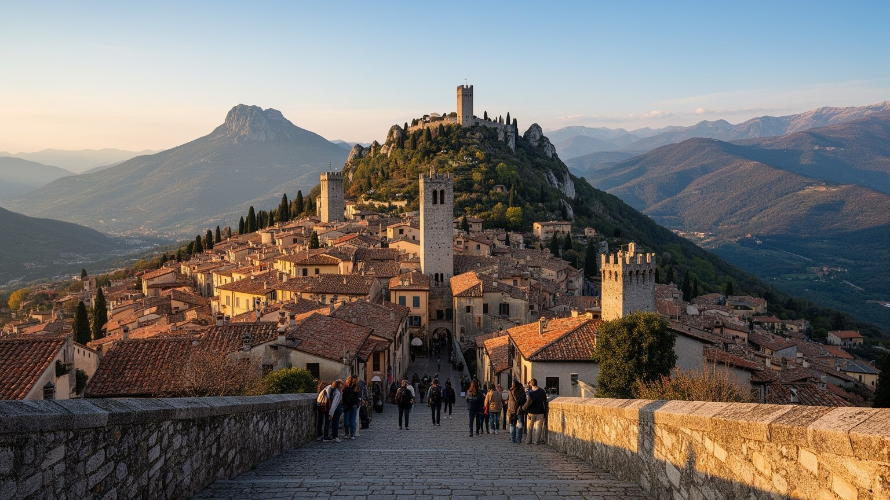
🇸🇲 サンマリノ共和国 / ティターノ山 / World City Atlas
イタリア半島の内陸に囲まれた小共和国の首都です。ティターノ山上の城塞、執政制度、世界遺産の旧市街、観光、金融、製造業、国境を越える通勤が、極小国家の政治と日常を結びます。
都市の骨格
サンマリノは大都市ではありません。けれども旧市街、三塔、政庁、教会、博物館、土産店、国境通勤、周辺の工業地区までを重ねると、小さな領域に主権国家の制度と生活が凝縮された都市として見えてきます。
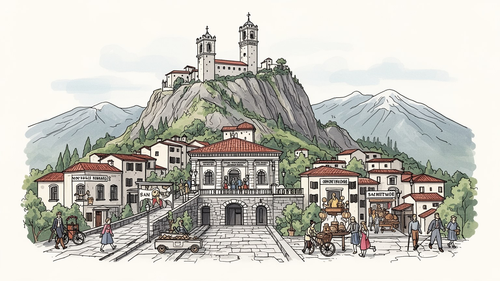
サンマリノはイタリアに囲まれた内陸小国家の首都です。EU非加盟ながらユーロを使い、イタリア、観光市場、金融規制と近く結びます。小ささが弱さではなく、交渉力と慎重さを要する条件です。山上から見る地政学です。
金融、観光、行政、小売、製造、建設が雇用を支えます。住民数より広い労働圏を持ち、イタリア側から通う働き手も重要です。季節商い、夜の飲食、土産市場も、国境を越える信用に依存します。若者の進路も焦点です。
聖マリヌスの建国伝承、カトリックの暦、執政の儀礼、石造りの旧市街、切手や貨幣の文化が重なります。祝祭の音楽、家族の食卓、学校で学ぶ共和国史、ラジオのニュースも、自由を語る共同体を支えます。鐘も近いです。
旅行者は三塔、政庁、聖堂、博物館、眺望を巡ります。住民は学校、車移動、冬の霧、観光期の混雑、住宅、国境の買い物を使い分けます。世界遺産の舞台は、同時に毎日の生活圏でもあります。坂道も暮らしの一部です。
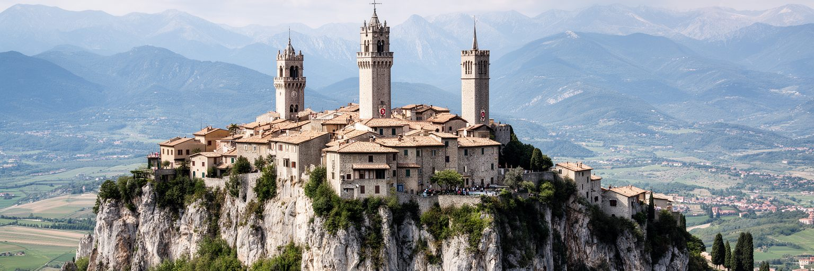
サンマリノの首都を理解する入口は、ティターノ山の地形です。旧市街は山上の尾根に沿って伸び、グアイタ、チェスタ、モンターレの三塔が岩場を守るように並びます。平地の首都のように広がるのではなく、斜面、門、石段、城壁、眺望が都市の方向を決めています。山上に立つと、周囲をイタリアのエミリアロマーニャとマルケの丘陵が囲み、独立国家でありながら日常的にはイタリアの地域圏に深く接続していることが分かります。ティターノ山は防衛の拠点であるだけでなく、自由を守った共和国という物語の舞台です。観光写真では雲海と塔が象徴的に見えますが、実際の都市生活では急坂、駐車場、搬入、冬の霧、歩行者の安全、景観規制が重要になります。山は美しさを生む一方で、都市の使い方に制約を与えます。だからサンマリノでは、眺望そのものが政治的、経済的、生活的な資源になります。小さな国土を上から見渡せる感覚は、住民に領域の近さを意識させ、訪問者には国家の小ささと密度を同時に伝えます。山の上に首都があることは、サンマリノの主権を視覚化する最も強い都市装置です。その近さは、国境や行政区を抽象ではなく、目に届く共同体として感じさせます。季節ごとの光も塔と街路の印象を変え、山上都市の記憶を更新します。朝夕の風景も、国家を身近な風景へ変えます。
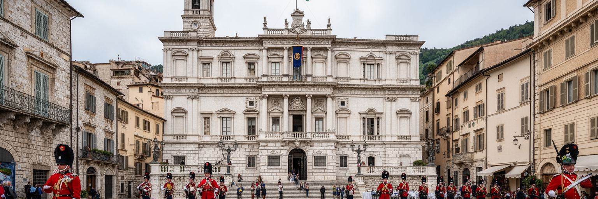
サンマリノは、世界で最も古い共和制の一つを自認する国家です。首都の中心にある政庁と自由広場は、その制度を街路の中で見せる舞台です。半年ごとに二人の執政が交代する仕組み、議会、政党、司法、儀礼、警備は、小さな人口規模の中で国家運営が行われていることを示します。制度の古さは単なる観光用の物語ではありません。周囲の大国、教皇領、近代イタリア、欧州統合の流れの中で、独立を維持するために法、外交、財政、税制を調整してきた経験の蓄積です。旧市街を歩くと、政庁のバルコニーや制服、国旗、式典が目に入りますが、その背後には予算、社会保障、金融監督、観光政策、国際協定を扱う実務があります。小国家では政治と住民の距離が近く、制度への信頼も日常の評判に影響されやすいです。首都は巨大な官庁街ではなく、観光客が広場を横切るすぐ近くで国家の儀礼が行われる場所です。サンマリノの政治性は規模の大きさではなく、主権を保つための細かな調整にあります。山上の静かな広場は、小国が歴史を制度として使い続ける方法を見せています。制度の規模が小さいほど、透明性、説明責任、国際基準への対応は重要になります。古い形式を守ることと、現代の監督に応えることが同じ広場で結びつきます。住民の近さも、制度を現実の生活へ引き寄せます。広場の距離感が政治を身近にします。
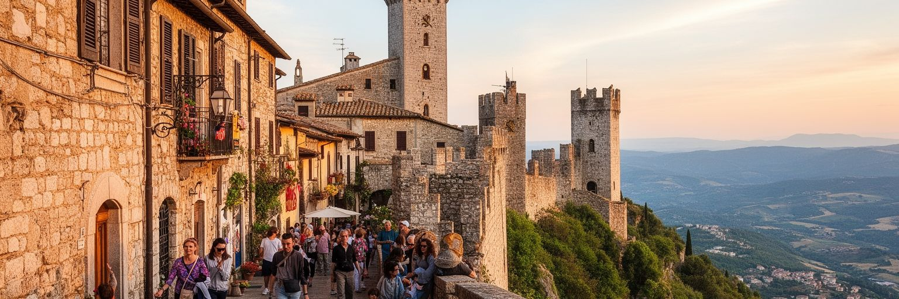
サンマリノ旧市街とティターノ山は世界遺産として知られ、観光は首都の最も目立つ経済活動です。三塔、政庁、聖堂、博物館、石畳の坂道、眺望は、短時間の訪問でも強い印象を残します。リミニなどアドリア海岸からの日帰り客も多く、夏や休日には小さな旧市街に人の流れが集中します。観光は飲食、小売、宿泊、交通、ガイド、土産品、博物館の収入を支えますが、同時に生活空間を混雑させ、店の構成を観光向けへ傾け、住宅や物流の負担を増やします。ピアディーナやワインを売る小店、路上の屋台、夜の広場の音楽も街の収入を支えますが、世界遺産の価値は塔や城壁の保存だけでは保ちにくくなります。住民が旧市街を使い続け、学校や行政、教会、日用品の店が機能し、過度な土産物化を避けることも大切です。サンマリノの観光は、国の存在そのものを体験する旅でもあります。入国審査のない開かれた国境、ユーロの貨幣、切手、共和国の儀礼、山からの眺望が、主権国家の小ささを分かりやすく伝えます。だから観光政策は、人数だけでなく滞在時間を延ばし、博物館や周辺地区へ流れを分散し、住民の暮らしと景観を守る方向が重要になります。旧市街は舞台装置ではなく、国の記憶を日々使う場所です。滞在の質を高めるには、歴史解説、歩行環境、地元産品、夜の文化体験を丁寧につなぐことが大切です。
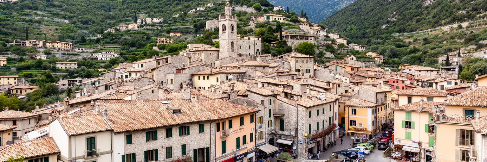
サンマリノの経済は、観光だけで成り立つわけではありません。金融、保険、行政、小売、製造、建設、専門サービスが組み合わさり、国境を越える市場と労働に支えられています。国土と人口は非常に小さいですが、一人当たりの所得は高く、制度の安定、税制、企業活動、観光ブランドが重要な資産になります。一方で、小国家の経済は外部環境に敏感です。イタリア経済、欧州の金融規制、税の透明性、観光需要、物価、エネルギー価格、製造業の受注が、短い距離で家計と財政に響きます。かつての金融モデルは国際的な監督強化の中で見直され、現在は信用を保ちながら産業を広げる段階にあります。旧市街の土産店やカフェ、週末の市場、SNSで広がる小さな店の評判だけを見ると観光都市に見えますが、周辺の低地には工場、倉庫、事務所、車で通う労働者の生活があります。サンマリノ経済の特徴は、国家としての制度と地方都市のような実務が重なっている点です。小ささは意思決定の速さを生む一方、特定産業への依存や人材不足を目立たせます。持続的な成長には、観光の質、金融の信頼、製造業の技術、若者の雇用、イタリア側との交通を同時に整える必要があります。小国の繁栄は、華やかな眺望よりも制度の信用に深く支えられています。小さな市場では、一つの制度変更や外需の落ち込みが早く表れます。
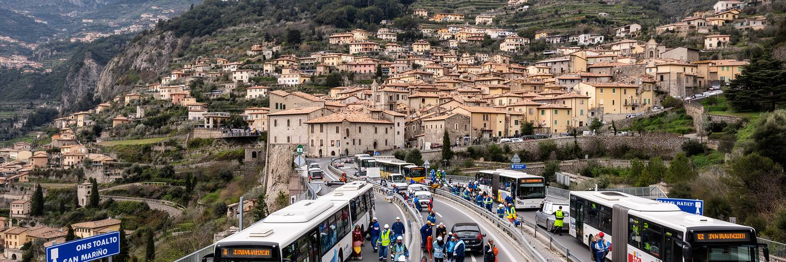
サンマリノの国境は、地図上では明確な線ですが、日常生活では多くの人が車で越える生活圏です。周囲をイタリアに囲まれているため、通勤、買い物、医療、教育、物流、観光客の到着は、リミニ方面や周辺自治体との関係に強く依存します。国境検問の緊張を感じる場所ではなくても、税制、労働契約、社会保障、車両、通信、物価の違いは、住民と企業の判断に影響します。サンマリノ国内で働くイタリア側の通勤者も多く、逆に住民がイタリア側のサービスを使う場面もあります。小国家の首都は、独立を誇りながら、実際には周囲の地域経済と切り離せません。山上旧市街の観光イメージだけでは、この国境の日常は見えにくいです。朝夕の道路、駐車場、工業地区、配送車、週末の買い物客を追うと、主権国家が一つの都市圏として機能していることが分かります。国境の近さは便利さを生む一方、外部の景気、燃料価格、交通渋滞、労働力不足への弱さも作ります。サンマリノにとって重要なのは、独立と接続を対立させず、制度の違いを保ちながら周辺地域と協調することです。国境は壁ではなく、毎日調整される生活インフラです。この接続が滑らかであるほど、企業は人材を得やすく、住民は選択肢を広げられます。道路と制度の両方が、サンマリノの生活圏を支える基盤になります。買い物の流れも、国境の近さを日々示します。
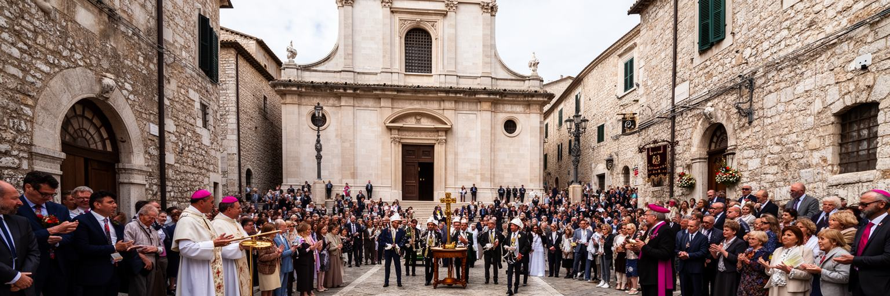
サンマリノの文化的な核には、石工だった聖マリヌスがティターノ山に共同体を築いたという建国伝承があります。この物語は信仰、独立、自由の記憶を結び、国名、祝祭、聖堂、公共儀礼に深く入り込んでいます。カトリックの暦、守護聖人の日、結婚や葬儀、日曜の礼拝は、観光客で賑わう旧市街のすぐそばで続く生活のリズムです。政庁での式典や執政就任の行列も、単なる衣装の見世物ではなく、共和国が自分の歴史を公に確認する時間です。小さな国では儀礼の参加者と見物人、政治家と近隣住民、店主と観光客の距離が近くなります。信仰は共同体をまとめる力である一方、現代のサンマリノには世俗的な生活、外国出身者、若い世代の価値観もあります。宗教的伝統を守ることは、社会を一色に固定することではなく、変化する住民構成の中で共有できる記憶をどう扱うかという問いでもあります。聖堂の鐘、広場の式典、国旗、吹奏楽や合唱、家族の祝祭が重なる時、サンマリノでは国家の歴史が日常の時間に入り込みます。信仰と政治儀礼が近いことは、小国のまとまりを強めると同時に、公共空間が誰に開かれているかを問い続けます。観光客が儀礼を眺める時も、住民にとっては家族や学校や教会の記憶と結びついた時間です。小さな共同体では、儀礼が世代をつなぐ教育にもなります。祝祭後の石畳の静けさも、街の信仰を感じさせます。
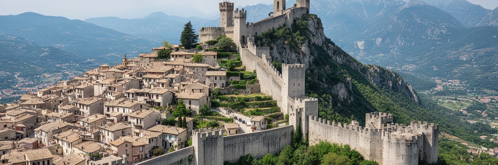
サンマリノの旧市街は、平坦な広場を中心に同心円状に広がる都市ではありません。山の尾根、城壁、門、急な石段、狭い路地、展望台が連続し、歩く人の身体に地形を意識させます。自動車は周辺で抑えられ、中心部では歩行と階段が都市体験の中心になります。この形は防衛のために生まれましたが、現在は観光の魅力、景観保護、生活上の制約として働きます。高齢者、子ども、車椅子利用者、荷物を運ぶ店員にとって、石畳と坂は美しいだけの存在ではありません。店舗への搬入、冬の凍結、雨の日の滑りやすさ、観光客の集中、消防や救急の動線も考えなければなりません。城塞都市を保存するとは、古い壁を残すだけでなく、現代の安全、バリアフリー、商業、住宅、文化活動をどう折り合わせるかを決めることです。夜の照明、店先の香り、塔へ向かう足音、ベビーカーを押す家族の速度も、都市の形を感じさせます。サンマリノでは、都市の形がそのまま国家の象徴になっているため、景観変更には慎重さが求められます。三塔から政庁へ歩く道は、観光ルートであると同時に、歴史的な防衛線と市民の生活路でもあります。斜面の都市は小さな判断の積み重ねで使いやすくなります。手すり、照明、舗装、案内、休憩場所の質が、世界遺産を生活の場として保つ鍵になります。住民、商店、来訪者が同じ坂を共有できるよう、保存と改善を細かく重ねる姿勢が必要です。
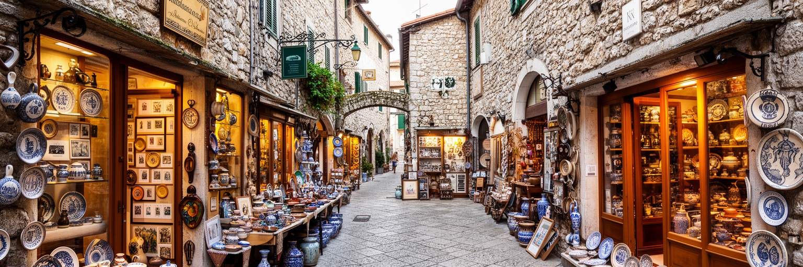
サンマリノの文化は、三塔と政庁だけで完結しません。旧市街には博物館、ギャラリー、切手と貨幣の文化、武器や歴史資料の展示、工芸品、陶器、革製品、食材、ワインやリキュールの店が集まり、観光と記憶をつなぎます。小国家にとって、切手や記念硬貨は単なる収集品ではなく、国名と主権を外へ伝える小さなメディアです。公共放送、ラジオ、観光客のSNS投稿も、山上の共和国の印象を外へ運びます。博物館は規模こそ大きくありませんが、建国伝承、共和制、戦争を避けてきた外交、移民、産業の変化を説明する役割を持ちます。一方で、観光地の商業は量販の土産物に傾きやすく、地元工芸や歴史理解が薄れる危険もあります。サンマリノの展示や買い物が持続するには、学校教育、地元作家、資料保存、デザイン、販売の場がつながる必要があります。訪問者が短時間で塔だけを見て帰ると、国家の文化的な厚みは伝わりません。博物館や小さな店に入ることで、サンマリノが独立をどう語り、どのように外部から見られてきたかが分かります。文化施設は観光客を滞在させる経済装置であると同時に、住民が自分たちの歴史を確認する公共空間です。小さな展示ケースの中に、山上の共和国が世界と関わってきた長い時間が詰まっています。買い物の楽しさと学びが結びつく時、文化は消費されるだけでなく、次の訪問理由になります。
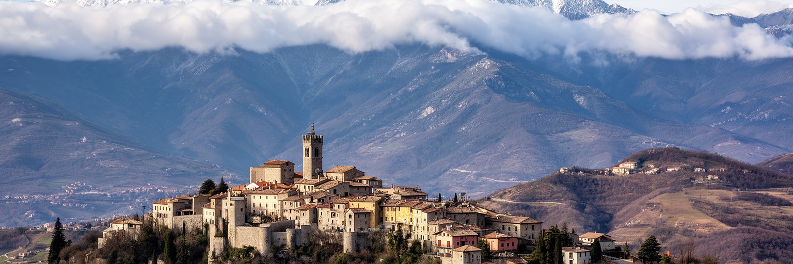
サンマリノの気候は、アドリア海に近い内陸の丘陵とアペニン山地の影響を受けます。夏は日差しが強く観光客が増えますが、標高のある旧市街では風が通り、夕方に涼しさを感じる日もあります。冬は霧、雨、冷え込み、時に雪があり、石畳や坂道の移動に注意が必要です。小さな国土でも、山上の首都、低地の工業地区、周辺の農地では体感が異なります。気候は観光の季節性を作り、店の売上、交通、宿泊、イベント、住民の移動に影響します。近年の欧州の熱波や極端な雨は、サンマリノにも無関係ではありません。斜面都市では排水、土砂、道路維持、石造建築の保全、緑地管理が重要になります。世界遺産の景観を守るためには、見た目の保存だけでなく、暑さへの日陰、休憩場所、水、冬季の安全、災害時の避難を考える必要があります。観光客にとっては美しい雲海や夕景も、住民にとっては通勤、通学、買い物を左右する天候です。サンマリノの山の気候は、国の魅力を作る資源であると同時に、老朽化した石造都市を管理する実務上の課題でもあります。小さな首都ほど、天候の変化は街全体に早く伝わります。気候への適応は、景観保護と生活の安全を結ぶ都市政策です。観光のピークをずらし、春秋や冬の魅力を伝えることも気候適応の一部です。天候に左右されにくい文化施設や交通案内は、小さな街の回復力を高めます。
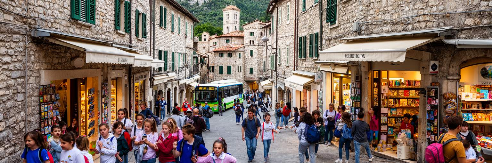
サンマリノの首都は、旅行者には中世的な石の舞台として見えますが、住民にとっては学校、役所、教会、店、駐車場、診療、郵便、家族の用事が集まる生活圏です。人口は少なく、互いを知る距離が近い一方、仕事や買い物では車で低地やイタリア側へ動くことも多いです。旧市街で暮らす人は、観光期の人混み、搬入時間、騒音、住宅の維持費、冬の静けさを使い分けます。子どもは学校行事やサッカーで地区を行き来し、高齢者は坂道や診療への移動を日々考えます。小国の暮らしには安心感もありますが、若者の進学や就職、住宅の選択、専門医療、文化活動の幅では外部とのつながりが欠かせません。サンマリノ人としてのアイデンティティは強いですが、日常言語、メディア、消費、親族関係はイタリア社会と深く重なります。首都の生活を読むには、世界遺産の景観の裏側にある家計、通勤、学校行事、行政手続き、近隣関係を見る必要があります。観光客が多い季節には収入の機会が増え、静かな季節には住民のペースが戻ります。その落差も都市のリズムです。サンマリノの日常は、国家の象徴に囲まれながら、驚くほど普通の生活課題を抱えています。小さな社会では、政策の変化や商店の閉店もすぐに共有されます。顔の見える規模は助け合いを生みますが、噂や選択肢の少なさを息苦しく感じる人もいます。静かな旧市街の内側には、親密さと自由の距離を測る日常があります。
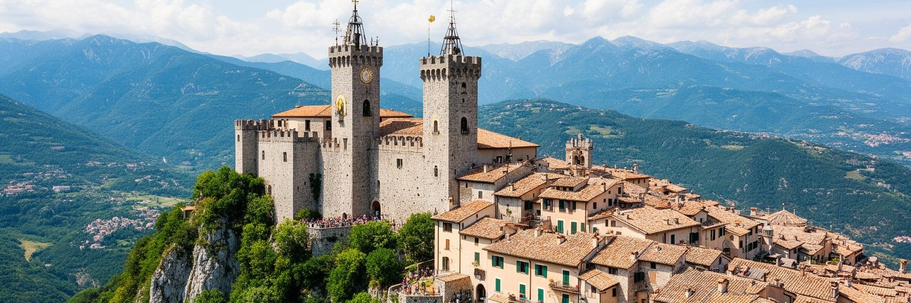
サンマリノを読む面白さは、都市、国家、観光地がほぼ重なって見えるところにあります。首都は人口数千人規模の小さな城域ですが、そこには政庁、執政の儀礼、三塔、聖堂、博物館、土産店、住宅、駐車場、観光バス、国境を越える労働、金融と製造の制度が凝縮されています。大都市のような巨大なインフラや多民族の広がりはありませんが、小さな空間だからこそ、主権、制度、生活、景観の関係が見えやすいです。サンマリノは独立を誇る一方、イタリアの地域経済、欧州の規制、アドリア海岸の観光、国際金融の信用に深く依存しています。この二重性を理解すると、山上の旧市街は単なる美しい中世風景ではなく、外部と交渉しながら残ってきた政治的な都市として見えてきます。三塔は防衛の記憶を示し、政庁は共和国の継続を示し、国境道路は現代の接続を示します。観光客が眺望を楽しむ同じ場所で、住民は日々の用事を済ませ、国は予算と外交を動かします。サンマリノは小さいから軽い都市ではありません。小ささを制度、物語、景観、信用へ変えてきた都市です。その密度を歩いて感じることが、この首都を理解する最良の方法です。その視点を持つと、古い城壁も土産店も国境道路も別々の要素ではなく、主権を暮らしに変える仕組みとしてつながります。小国の都市性は、その結び方にあります。